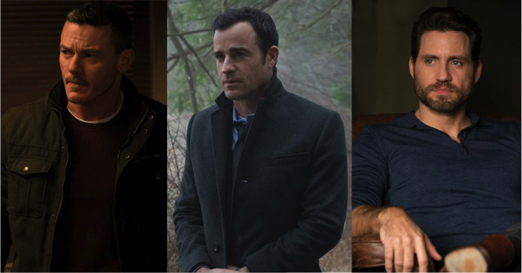
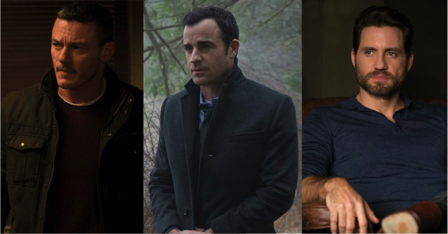
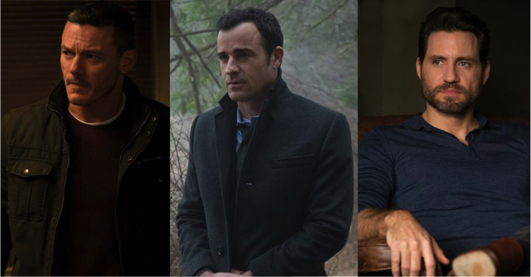

Chi legge il libro e chi guarda il film “ascolta” due storie diverse?
Federica e Valentina cercano di rispondere a questa domanda per noi.
LA RAGAZZA DEL TRENO
“The Girl on the Train”, di Tate Taylor, con Emily Blunt, Haley Bennett, Rebecca Ferguson, Justin Theroux, Luke Evans, Allison Janney, Édgar Ramírez, Lisa Kudrow, Laura Prepon, durata 112 min. – USA 2016
Nella lista dei film più attesi e pubblicizzati del 2016 non può mancare La ragazza del treno, un thriller con una forte componente psicologica che sin dal trailer prometteva di diventare uno dei titoli di punta della stagione cinematografica invernale. Facile comprendere i motivi di queste grandi aspettative: il film è l’adattamento dell’omonimo romanzo di Paula Hawkins, pubblicato nel 2015. Il libro si è rivelato un grandissimo successo di critica e pubblico, come previsto dalla DreamWorks SKG, il prestigioso studio cinematografico fondato da Steven Spielberg, Jeffrey Katzenberg e David Geffen, che ne ha acquistato i diritti ancora prima della pubblicazione. La curiosità sale pensando, inoltre, ai nomi scelti per i ruoli dei protagonisti: Emily Blunt, Justin Theroux e Haley Bennet sono attori molto interessanti, in un nutrito cast. La regia di questo promettente progetto è stata affidata allo statunitense Tate Taylor che, con l’aiuto della sceneggiatrice Erin Cressida Wilson, si occupa per la seconda volta della trasposizione di un romanzo di successo – nel 2012 ha diretto “The Help”, che agli Oscar ha guadagnato una statuette e ben tre candidature.
DAL LIBRO AL FILM
Portare sul grande schermo la componente psicologica del romanzo è la grande sfida accettata dal regista e dalla sceneggiatrice. Inevitabile, quindi, che questo incarico venga affidato alle attrici che interpretano le voci del libro. Emily Blunt, dimostrando grande esperienza, si assume, in particolare, la responsabilità di trasporre questa caratteristica alla base del libro, incarnando perfettamente le angosce e le ossessioni della protagonista.
Tra le scene aggiunte nel film, risulta molto azzeccata quella in cui la protagonista, sola in un locale, cerca conforto nei cocktail, ubriacandosi e registrando sul cellulare un video in cui dà sfogo ai suoi sentimenti: si tratta di una sequenza originale, capace di sintetizzare efficacemente in una manciata di minuti la psicologia della protagonista.
E’ affascinante osservare la struttura della narrazione, che risulta simmetrica – il discorso iniziale, in cui la protagonista riflette sui suoi cambiamenti, viene ripreso specularmente pochi minuti prima dello scorrere dei titoli di coda – e caratterizzata da una sequenza di “cornici” che spesso trovano riferimenti concreti nelle scenografie (il finestrino del treno, il balcone dell’abitazione di Megan e Scott, la finestra della casa di Anna e Tod).
La storia, inoltre, viene attraverso dei luoghi: le varie dimore, l’appartamento della protagonista, il sottopassaggio e il bosco. Cosa li unisce tutti? Un treno, un non-luogo che diventa assoluto ma silenzioso protagonista capace di trovare legami tra i diversi ambienti.
Il regista rende molto bene questa idea, soprattutto grazie ad ampie riprese del treno che, rapido e incurante di ciò che lo circonda, scorre sui binari a pochi metri dai set dei drammi narrati.
I PROTAGONISTI
Rachel
La Rachel che ci offre Paula Hawkins è una donna distrutta dal dolore ma che preferisce annegare i propri dispiaceri nell’alcol piuttosto che alzarsi e reagire.
Per quanto il lettore possa farsi un’idea della donna, magari un po’ trasandata e mai sobria, nulla lo prepara all’estrema versione che ce ne offre la trasposizione cinematografica.
La fantastica Emily Blunt, si trova ad interpretare una donna che è al limite: non si tratta soltanto di alcolismo; quella che vediamo è una donna che rasenta la psicopatia. Rachel parla e balla da sola in un parco, si arrabbia e prende a cuore una storia d’amore non sua, segue le persone e a sua volta crede di essere seguita e, infine, non si stacca mai dalla bottiglia, diventando l’ombra di se stessa.
Sebbene l’interpretazione sia stata magistrale, questa esagerazione forse non rientrava nell’immaginario della scrittrice: per quanto la Rachel del libro soffrisse, la sua ombra psicopatica nel film non le appartiene. D’altra parte, le paure e le preoccupazioni della protagonista – dominanti nella versione cartacea – vengono ben rappresentate visivamente con alcune scene aggiuntive in cui la donna disegna ossessivamente i suoi ricordi confusi e disordinati su un taccuino riempito da cupi tratti che rispecchiano il suo animo tormentato.
Megan
Haley Bennett è il volto di Megan, la ragazza che Rachel vede ogni giorno dal finestrino del treno.
Megan è una donna dolce, almeno al primo impatto con il lettore e lo spettatore.
Anche in questo caso, Taylor estremizza il personaggio: Rachel osserva Megan dal finestrino del treno immaginandone la vita, i pensieri e le emozioni e invidiandola ogni volta che la vede con accanto il suo compagno. Ma Megan non è solo questo.
Appena il punto di vista si sposta su di lei, ci appare come una ragazza perduta, una ragazza che si trova in una relazione che inizia a starle stretta ma che non abbandona, preferendo gettarsi tra le braccia di altri uomini.
In realtà è una persona molto triste, che non sa ciò che vuole e che cerca di appagare il suo vuoto interiore intrattenendo relazioni sessuali con molti uomini.
Questa sua situazione, questa sorta di depressione, però, non appare nel film: la Bennett ci lascia una Megan che sembra quasi ninfomane; ogni scena in cui la vediamo gira attorno a questo elemento, facendo sembrare la protagonista come ossessionata dal desiderio sessuale.
“Io voglio che sia tutto vago, voglio mischiare tutti gli uomini… non importa chi sono, importa come mi fanno sentire”.
Purtroppo Haley Bennett e la sua Megan, diversamente dal libro, non ci lasciano nessuna particolare emozione.
I PERSONAGGI SECONDARI

Anna è la terza voce narrante del romanzo, la donna con cui Tom ha tradito Rachel e con la quale ha costruito una famiglia, nella casa che prima era della stessa Rachel. Sin dalla sequenza di apertura del film, viene sottolineato il contrasto tra le due: Rachel osserva la sua vecchia dimora – simbolo del suo passato – dal treno, come una semplice spettatrice di una vita che non le è mai potuta appartenere, ricordando i momenti felici vissuti tra quelle stanze.
Da una finestra sul presente, invece, si intravede un quadretto idilliaco e idealizzato di una famiglia perfetta, animata dal calore di una nuova nascita, divenuta il fulcro della vita di Anna. Anna, la donna perfetta: è bella, giovane ed è riuscita, al contrario di Rachel, a dare a Tod la famiglia che lui tanto desiderava.
Questa differenza tra le due è ben resa anche dall’aspetto delle rispettive interpreti: Rachel è più bassa, i capelli sono scuri ed è sempre in disordine; Anna invece è giovane, bionda e sempre curata.
Per quanto l’interpretazione dell’attrice svedese Rebecca Ferguson non deluda, Anna è il personaggio che risente maggiormente il passaggio dal libro al grande schermo: Nel romanzo è una della narratrici principali, una delle prospettive che il lettore può studiare mentre cerca di comprendere ogni avvenimento.
Nella pellicola, invece, viene declassata ad una figura sfuggente, in secondo piano, che riesce a ritagliarsi dello spazio solamente avvicinandosi al finale, in cui finalmente compare quella vena di follia che la caratterizzava nel romanzo.
Per quanto riguarda i personaggi maschili, nonostante l’importanza del loro ruolo nella storia (sia nel libro che nel film), né il marito di Megan, Scott, né l’ex di Rachel, Tod, riescono ad emergere. Nel libro, è proprio la struttura del racconto (narrato dal punto di vista delle tre protagoniste) che non lascia spazio alle figure maschili: tutto ruota attorno alle vite di Rachel, Anna e Megan, e gli uomini, pur essendo alla base della storia, fanno da sfondo.
Lo stesso accade nel film: Luke Evans, che interpreta il marito di Megan, non spicca; la sua presenza è scenicamente inutile e non riesce a suscitare alcuna emozione: persino quando scopre che la moglie è scomparsa e che l’ha tradito, la sua mimica facciale rimane la stessa.
Justin Theroux, l’uomo attorno al quale girano le vite delle tre protagoniste è, come il suo collega, poco incisivo; forse la sua interpretazione è migliore di quella di Evans, perché riesce a ingannarci con la figura del marito benevolo, ma per il resto è abbastanza piatto.
Il problema più evidente dei personaggi maschili è, probabilmente, la loro mancanza di credibilità.
Sono costantemente in secondo piano, silenziosi e fin troppo stereotipati.
Incomprensibile, inoltre, la scelta di calcare l’accento “latino” dello psicoterapeuta Kamal Abdic, nettamente in contrasto con la sua controparte cartacea, di cui viene suggerita un’origine slava.
L'APPROCCIO ALLA STORIA
Un grande pregio della sceneggiatura di Erin Cressida Wilson è quello di riuscire a concentrare in poche immagini ed in efficaci parole alcuni aspetti importanti dei caratteri dei personaggi. Nei diversi flashback degli incontri di terapia, i dialoghi tra Megan e Kamal portano alla luce significativi avvenimenti del passato della ragazza, eventi che aiutano lo spettatore a comprendere meglio il personaggio. Sotto quest’ottica, anche la riunione degli alcolisti anonimi a cui prende parte Rachel assume un importante significato nello sviluppo della trama, riuscendo a spiegare rapidamente e con chiarezza la dipendenza che affligge la protagonista e lasciando intuire, sin dal principio, quali saranno le problematiche che le impediranno di ricordare tutto ciò a cui ha assistito da ubriaca.
Una scena decisiva per il film, e che sintetizza la scelta registica, è quella in cui una vecchia amica di Rachel e Tod, Martha (interpretata da Lisa Kudrow), fa capire a Rachel che molte delle cose che credeva di aver fatto non sono mai accadute: Tod disse a Rachel di essersi resa ridicola, per il troppo bere, durante una festa a casa di Martha e che ciò lo aveva portato a perdere il lavoro, dando così la colpa a sua moglie di questo e altri fallimenti.
Ma così non è stato: nel momento in cui Rachel incontra Martha e le porge le sue scuse, la prima afferma che non ce n’è bisogno, dal momento che lei e il marito avevano lasciato quasi immediatamente la festa, senza problemi, e che il licenziamento di Tod fu causato dalle numerose relazioni extraconiugali che intratteneva con le sue colleghe.
Da quel momento, Rachel si sforza di ricordare e inizia a capire: ricorda quella festa, ricorda il momento in cui, tornando a casa, suo marito diventa violento scaraventandola per strada o spaventandola con minacce. La protagonista (e lo spettatore assieme a lei) pian piano si rende conto di non essere mai stata lei il problema: il troppo bere l’aveva portata a dimenticare quanto effettivamente successo e a credere ai falsi resoconti del marito, mirati a sminuirla e a farla sentire in colpa, fornendogli una scusa per lasciarla. Tutto ciò dona a Rachel una forza nuova, una volontà di riscatto e vendetta che la spingono a far chiarezza su quanto accaduto e che la accompagneranno per tutta la parte finale del film.
Tuttavia, nonostante queste ammirabili tecniche di sintesi, il film in alcuni passaggi risulta lento, anche a causa di un numero crescente di flashback che rende poco lineare la storia.
Lo stratagemma dei salti temporali è, invece, parecchio efficace nel romanzo, in cui ricordi e pensieri dei personaggi riescono a trovare una voce ed un modo di esprimersi più adeguato.
L'AMBIENTAZIONE
Una delle modifiche più importanti nate dal passaggio dal libro alla pellicola è il cambiamento della location. Il “palcoscenico” statunitense non influenza particolarmente lo svilupparsi della storia; anzi, sotto alcuni aspetti, riesce ad evidenziarne ulteriormente i significati. La luccicante New York – la città per eccellenza - non viene rappresentata con stereotipati e svettanti grattacieli; la metropoli compare attraverso sfocate e confuse immagini di bevute o eventi nei locali frequentati da Rachel nel presente e ai tempi della sua relazione con Tom.
Tutte queste sfuggenti immagini entrano in netto contrasto con le sequenze ambientate nella periferia, inquadrata da candide ed ordinate villette, che appaiono a dir poco idilliache. Qui, le immagini sono più definite, precise e indissolubilmente incastonate come ingannevoli diamanti nelle memorie e nei desideri di Rachel.
La scelta di New York rende possibile, inoltre, l’inserimento della rappresentativa sequenza in cui una solitaria e triste Rachel riflette pensierosa su una panchina di Central Park, a pochi passi dalla Untermeyer Fountain, una scultura bronzea che rappresenta tre fanciulle danzanti; chiaro ed evidente riferimento alle donne coinvolte nella storia raccontata.
UN ULTIMO FLASH
L’obiettivo non dichiarato dell’adattamento cinematografico era quello di smascherare tre diversi paradigmi di donna, narrandone l’evoluzione, scena dopo scena, e mostrandone, infine, gli aspetti meno evidenti, nascosti sotto ai pregiudizi e alle apparenze. Le sequenze iniziali sottolineano questo aspetto, presentando alcune scene di vita quotidiana di giovani donne con figli inserite in perfetti e curati giardini e villette sofisticate. Il regista evidenzia gli stereotipi da cui sfuggire ma, in parte, ne rimane vittima, soprattutto a causa di uno scarso approfondimento dei personaggi secondari e, in particolare, di Anna. La riflessione sugli stereotipi in cui vengono spesso imprigionate le figure femminili riesce comunque ad emergere: le protagoniste entrano in conflitto con i personaggi maschili, a cui tutto viene concesso e i cui atteggiamenti vengono sempre giustificati. Questa idea è ben riassunta in una frase di Rachel:
“Se una donna beve un bicchiere di vino è alcolizzata, se lo fa un uomo è un simpaticone.”
Nonostante una buona messa in scena formale, il film purtroppo non riesce a trovare il giusto equilibrio tra componente visiva e accompagnamento musicale.
I brani composti da Danny Elfman, che nel suo curriculum vanta ben quattro candidature agli Oscar, se considerati singolarmente rendono alla perfezione il senso di irrequietezza e tormento vissuto in diverso modo dalle protagoniste: per ognuna di loro, Elfman crea un diverso tema musicale, caratterizzato da differenti armonie ma con una cupa base di insistenti arpeggi come comune denominatore.
Le diverse tracce, però, non riescono ad amalgamarsi alla perfezione con le sequenze del film, che privilegia inquadrature sofisticate e una fotografia elegante, senza valorizzare la sua colonna sonora.
ALLA FINE CHI VINCE?
Dobbiamo ammettere che, per la maggior parte, la versione cinematografica riprende fedelmente quanto letto nel romanzo. Nonostante alcune differenze con il libro (basti pensare al ruolo di Anna, le cui particolarità caratteriali vengono, ahimè, trascurate), non sono poche le scene in cui lo spettatore dice a se stesso “questa scena l’ho già vista...”, pur essendo consapevole non averle viste altrove se non nel suo immaginario. Una così fedele, seppur parziale, riproduzione, affascina colui che ha già letto il libro, cosa che non accade per molte pellicole che alcune volte, si allontanano dall’originale cartaceo.
Questo film viene spesso accostato a “Gone girl” (di cui, però, non ha la stessa suspense, né l’effetto sorpresa) e, ahimè, anche a Hitchcock… su quest’ultimo punto, l’unica cosa che può ricordare il grande maestro del thriller è il fatto di guardare le vite degli altri da un finestrino, proprio come faceva James Stewart ne “La finestre sul cortile”. Ne viene fuori, a nostro parere, un omaggio al grande regista, niente di più e crediamo che niente di più pretendessero regista e autrice.


 
